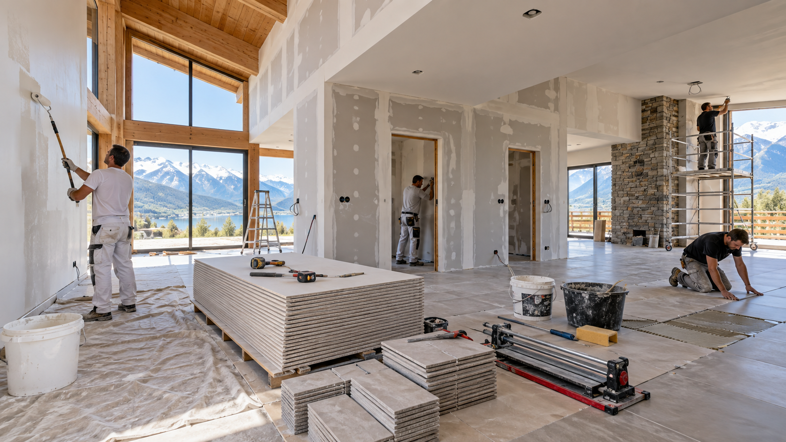

Construire la qualité dans chaque finition.
Une entreprise structurée, polyvalente et réactive pour les projets de peinture, plâtrerie, carrelage, sols souples, faux plafonds, ravalement et rénovation.
Une PME du bâtiment ancrée dans le territoire.
Créée en 2012 et implantée à La Ravoire, KAROUI intervient sur des opérations de rénovation, d’entretien et d’aménagement pour des acteurs publics, des bailleurs, des entreprises et des clients privés.
Des métiers complémentaires, un seul pilotage.
Peinture & ravalement
Préparation des supports, peinture intérieure et extérieure, finitions et ravalement.
Plâtrerie & faux plafonds
Doublages, cloisons sèches, plaques de plâtre, isolation et plafonds suspendus.
Carrelage & faïence
Pose de revêtements céramiques en rénovation comme en aménagement neuf.
Sols souples
PVC, revêtements résilients, préparation des supports et finitions.
Rénovation multi-lots
Coordination de prestations complémentaires pour logements, bureaux et équipements publics.
Performance énergétique
Compétences et formations en rénovation énergétique et isolation par l’extérieur.
Réactivité sur le terrain, suivi rigoureux.
Chaque chantier s’appuie sur un conducteur de travaux, un chef d’équipe et des compagnons qualifiés. L’organisation prévoit une capacité de renfort avec une seconde équipe si la situation l’exige.
- Suivi technique et contrôle de conformité sur site
- Réunions de préparation et de suivi
- Traçabilité des documents et des décisions
- Autocontrôles et gestion quotidienne des non-conformités
- Intervention rapide dans le cadre du parfait achèvement
